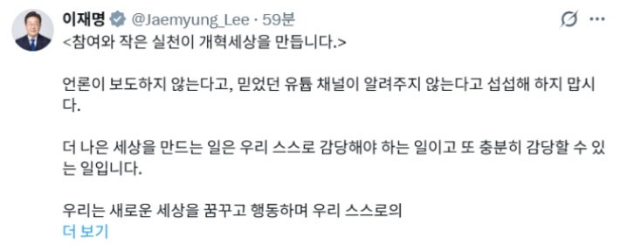
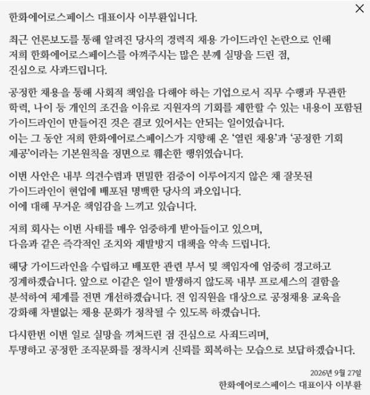
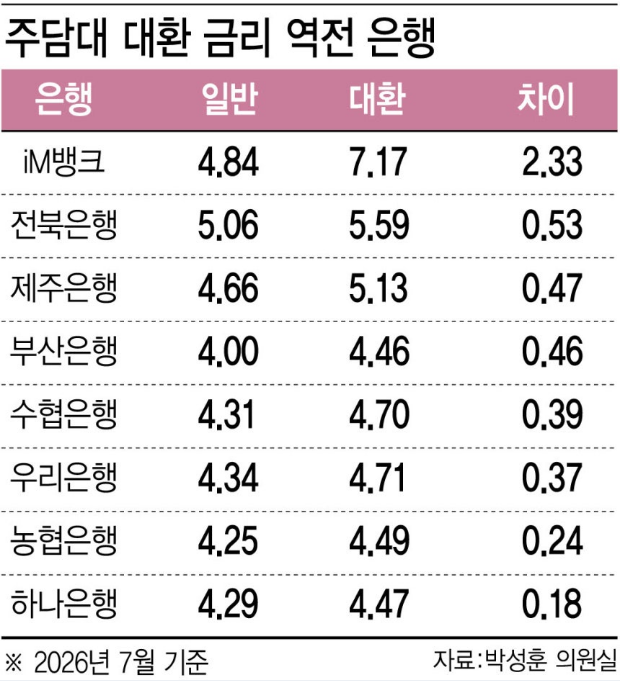
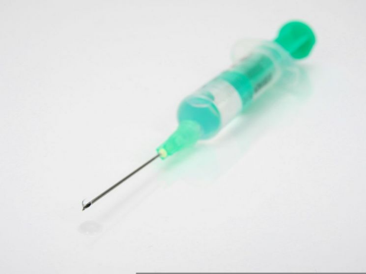
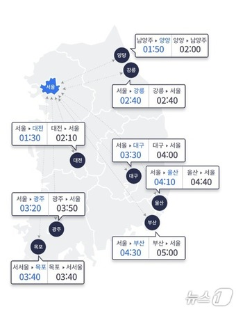
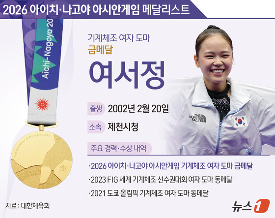
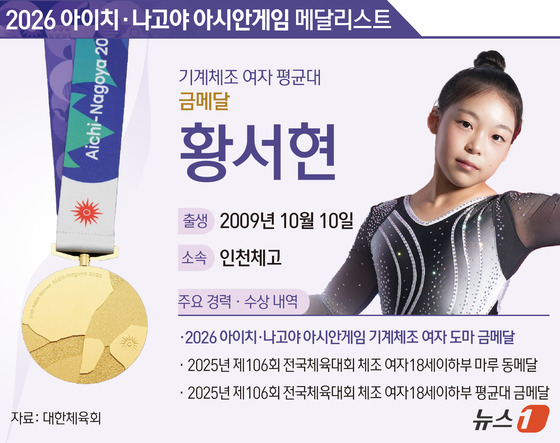
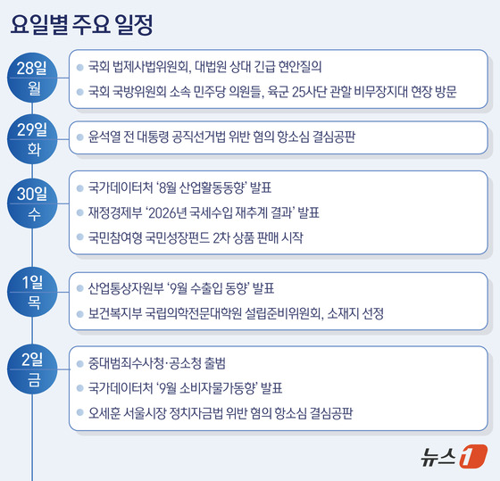
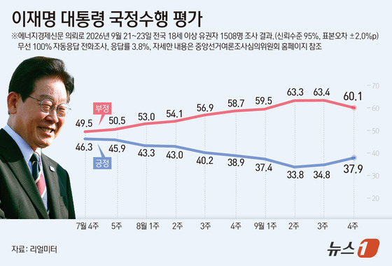

9/28(월) · 기준 2026-09-27 22:00 ~ 2026-09-28 06:00
엑셀 다운로드
"이미지 다운로드"를 누르거나, 이미지를 길게 눌러 저장한 뒤 카톡으로 보내세요.









![[연합뉴스] 2026 아이치·나고야 아시안게임 메달리스트 (27일)](images/graphics/연합뉴스_01.jpg)
![[연합뉴스] 2026 아이치·나고야 아시안게임 국가별 메달 현황 (27일)](images/graphics/연합뉴스_02.jpg)
![[뉴스1] [그래픽] 의원급 의료기관 인플루엔자 의사환자 분율 추이](images/graphics/뉴스1_08.jpg)
![[뉴스1] [오늘의 그래픽] 올가을 단풍 조금 늦어요…설악산 10월 20일 '절정'](images/graphics/뉴스1_09.jpg)

![[단독] 폭발 현장 장병들 “北 목함지뢰 봤다”](images/article_02.png)